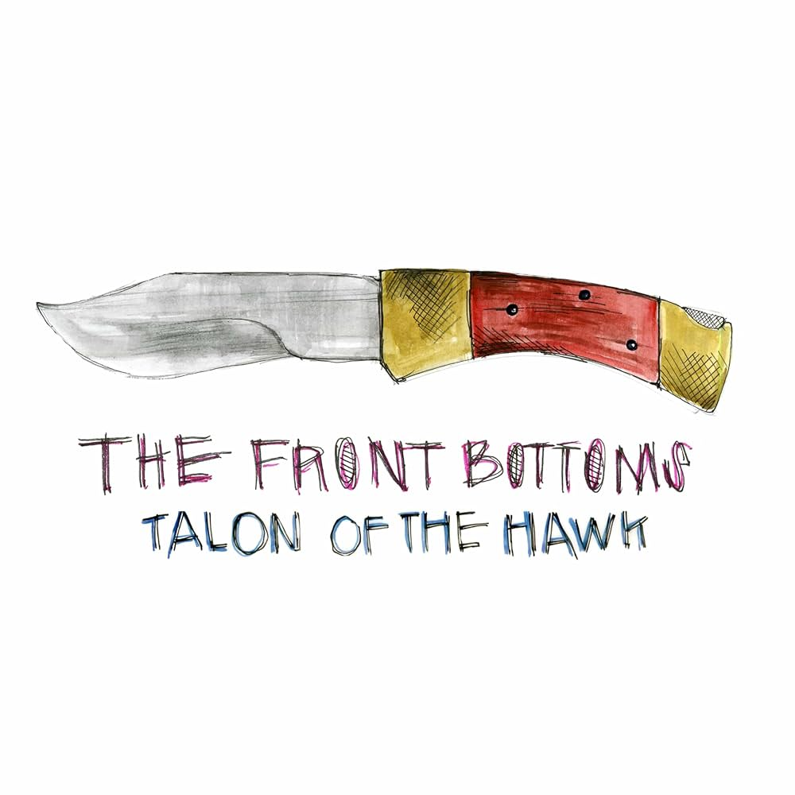
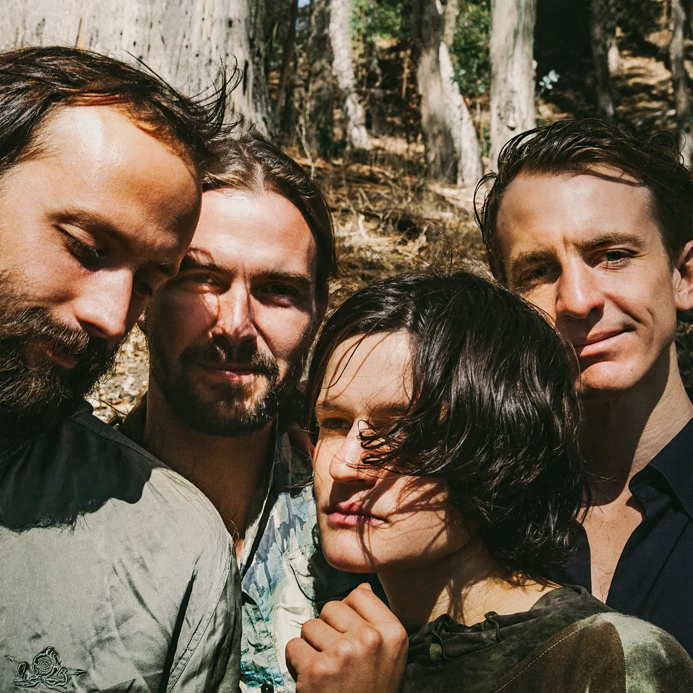
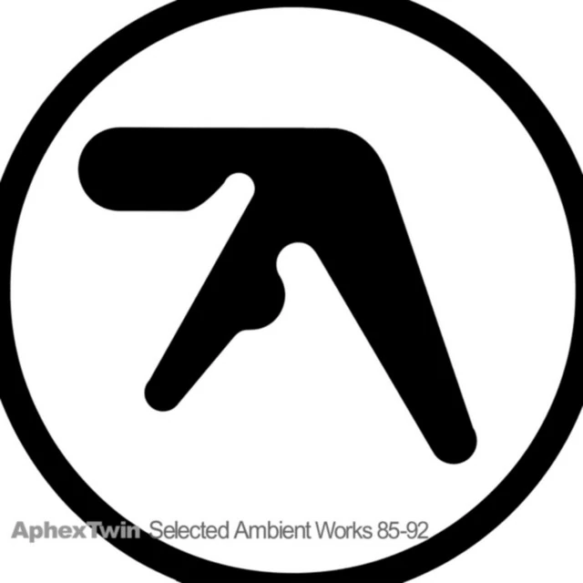

what are you doing?
this is a now page. if you have your own site, you should make one too!
my life is often busy, and i've been somewhat secretive when sharing details with family and friends. i thought this would be a great way to keep everyone updated on what i'm currently doing. i'll do my best to keep this page updated with any new happenings. thank you, Phillip Ridlen, for inspiring me with your now page!
this is what i'm doing as of June 30th 2026
‣ see what i have been up to previously
life 🌟

there has been a lot going on this month. we had the company summer party at opera, which was really nice, and i celebrated midsummer at my mom's place. one of my close friends graduated, so i went to her graduation party and met some new people there too. i did some more traveling after that, me and a new friend group i put together went backpacking through germany, italy, france, the uk, and back to sweden. in berlin we met up with one of my close friends, and it was very weird seeing them interact with each other, i would never have thought they would be in the same place at the same time because in my mind these people have always existed in separate universes. we managed to travel right when the heat storm hit europe, and when we were in france it was almost 50 degrees, and in the middle of the night the fan stopped working because of an electricity outage and it got so warm we had to sleep on the balcony. the day after we went to the front bottoms concert in the uk. back in sweden i went with some other friends to liseberg, the amusement park in gothenburg.
work 💼
Opera Software
mostly been working with summer intern projects, one system for debugging stats reporting and one system for user targeting. i have been involved in testing the reusable kyc system i helped implement, and implementing the user interface for onboarding for that, because that will make things easier now that we are releasing the digital card.
hobbies ⚙️
programming
i picked up programming as a hobby again, and i am working on several projects in parallel. i want to make sure this keeps up, so i will announce things properly next month instead, but i can say this much, i am back. one project i can reveal already is a web crawler i have been building for many years, i just picked it up again. it is essentially crawling all .com domains, among other top-level domains, and tracking various things, legal, of course. i wrote some additional tooling for it and improved its parallelism so it runs faster now.
photography
here are some photos from the eurotrip with my friends. :-)


music
songs played
1102 plays
daily average
36 plays
biggest listening day
june 7th with 143 plays
top artist
The Front Bottoms
top album

Talon of the Hawk by The Front Bottoms
top song

Two Hands by Big Theif
last played

Xtal by Aphex Twin
expert progress 🎓
the concept of reaching 10,000 hours to become a professional or an expert in a field is derived from Malcolm Gladwell's book "Outliers: The Story of Success". gladwell popularized the idea that achieving a high level of proficiency in any field typically requires about 10,000 hours of dedicated practice. this notion is based on the research of psychologist Anders Ericsson, who studied the practice habits of elite performers in various domains. i've been tracking my programming time since 2019, i officially crossed the 10,000-hour mark. the actual total is likely higher, considering i wrote my first program before i started tracking my time! please note that i include this jokingly; i don't necessarily believe in the idea of becoming an expert after 10,000 hours. i haven't given it much thought, and i certainly don't feel like an expert yet. that said, if you are feeling generous, you may now officially refer to me as an expert programmer.